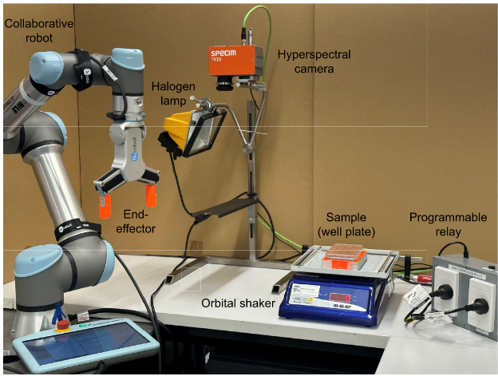
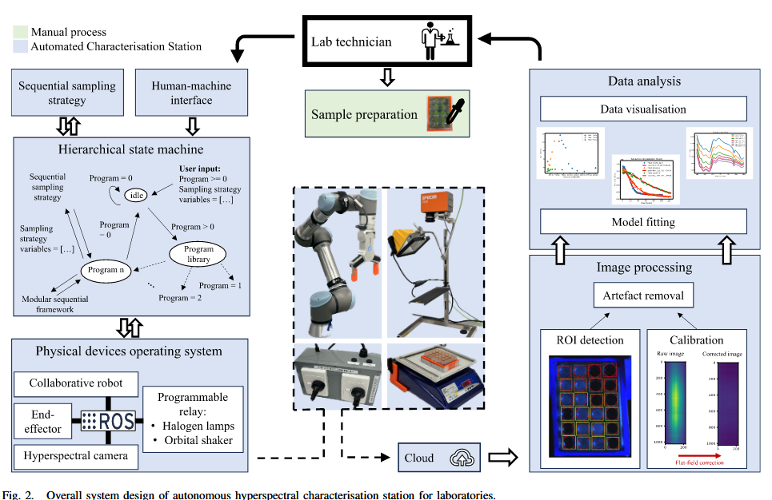
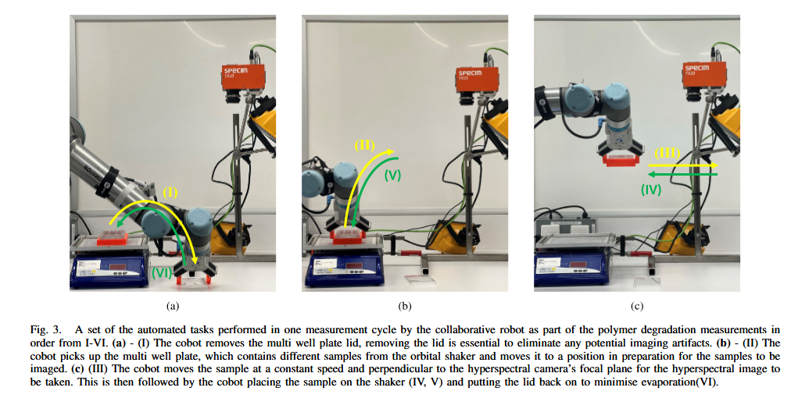
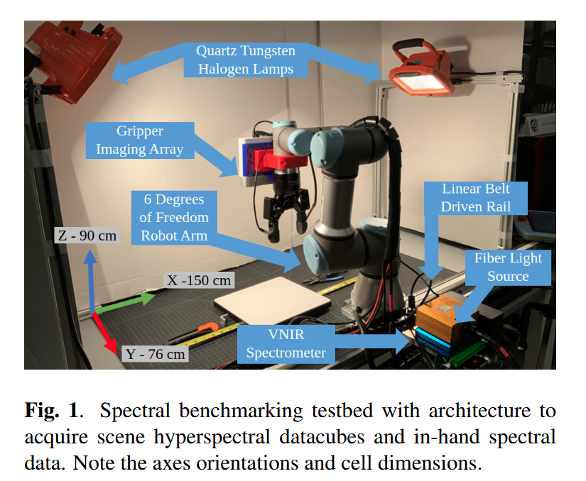
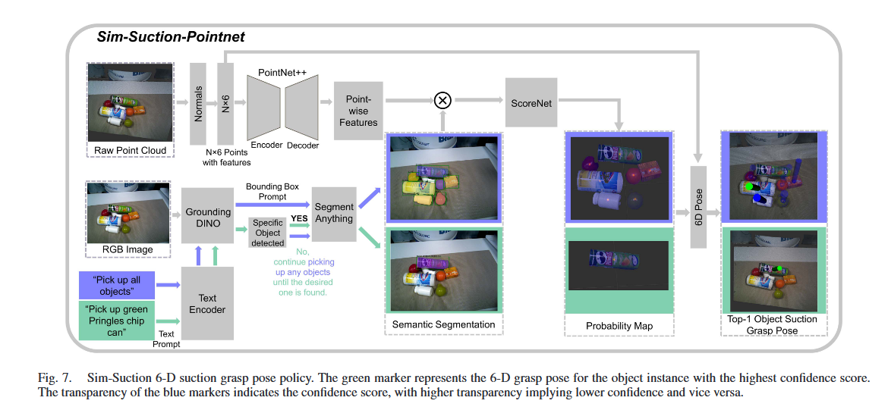
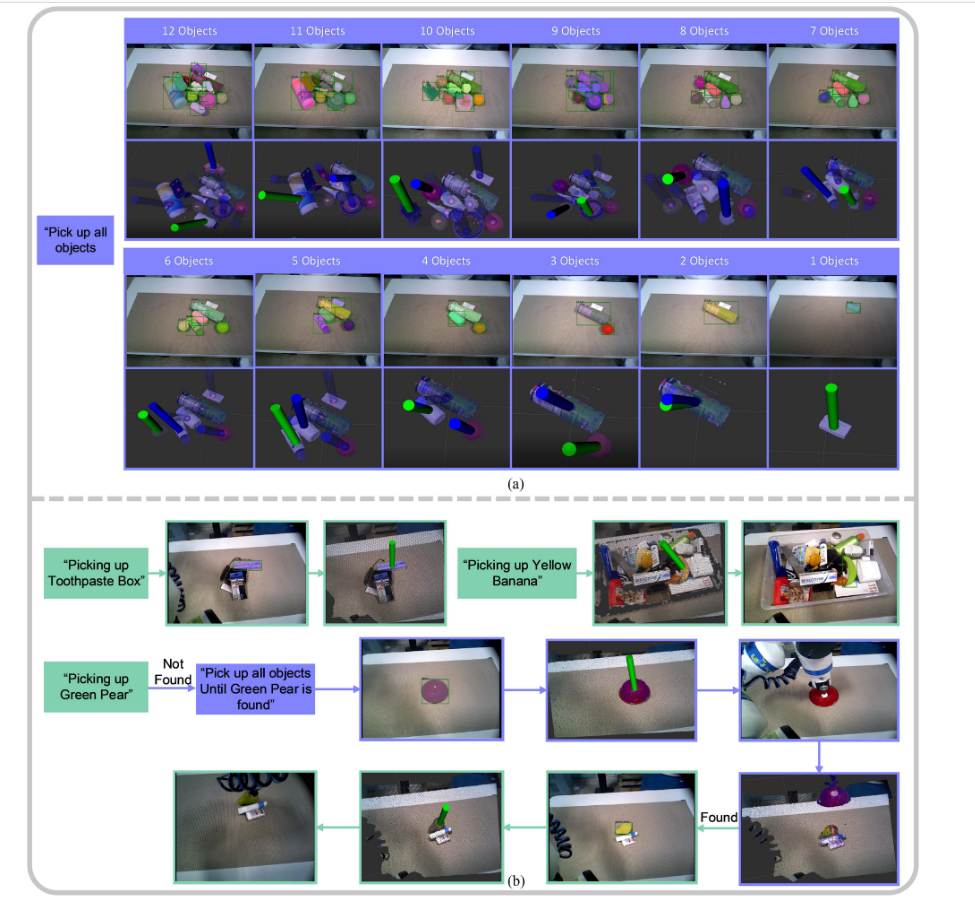
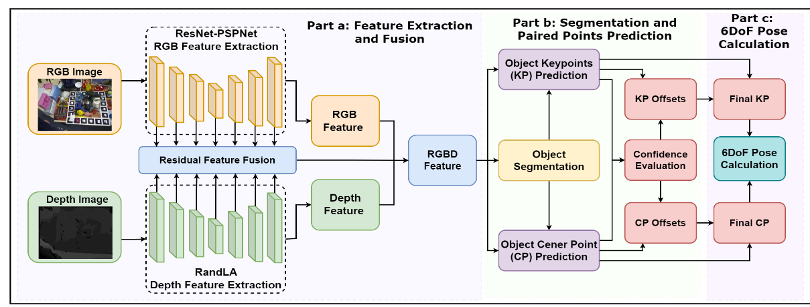
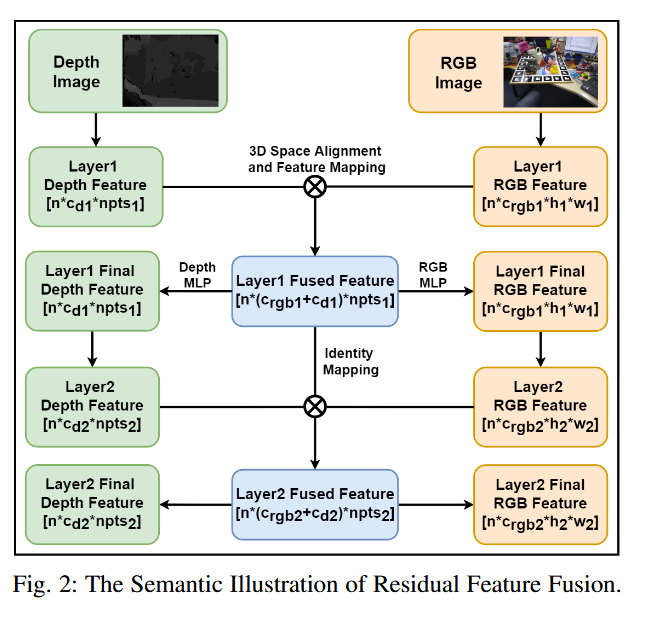
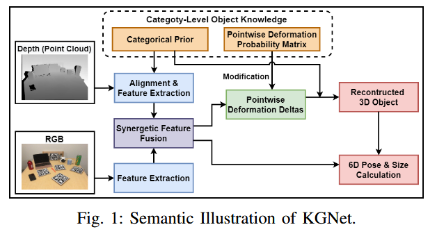
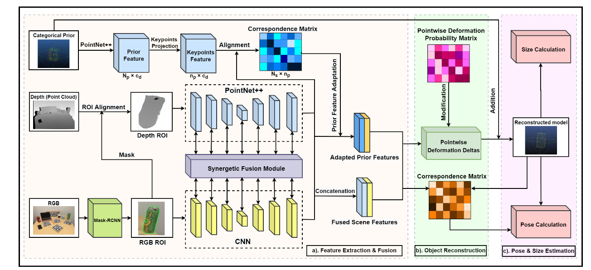

Paper Notes
阅读过的文献笔记将会按类别整理到该文中, 包括对论文的理解、收获和疑问等。 我的研究方向主要落在：机器人抓取，多传感器设计与融合。
在阅读及总结的过程中我参考了 How to read a paper 这篇文献，将阅读分为三个PASS：
First Pass:
- 仔细阅读文章标题，摘要，介绍。
- 只读一下各个章节的标题，小标题，忽略其他。
- 读一下存在的数学公式以确定其理论基础。
- 读一下结论。
- 快速浏览下参考文献，以确认是否有读过的。
在这一遍阅读中，需要确认5Cs: Category, Context, Correctness, Contributions, Clarity。以确认是否还有继续读下去的必要。
Second Pass:
- 第二遍阅读需要对除了证明细节等其他内容进行精读，仔细查看图表等细节，以确认这是一篇好工作还是粗制滥造的工作。
- 标记没阅读的相关参考文献。
如果只是感兴趣的领域而非专业领域可以到此为止。
Third Pass:
- 第三次阅读应该尝试去虚拟复现这篇文章，一步步跟着他思考，来查看文章中是否有一些漏洞等。并通过你的假设来与实际的论文来进行比较确认其优缺点。
Hyperspectral
本类别整理下关于高光谱相关的论文，包括算法，以及和其他领域的结合
Spectroscopy 和 hyperspectral imaging 是两种在研究物质光谱特性上相关但有显著区别的技术。
-
Spectroscopy（光谱学）：
- 是研究物质和电磁辐射之间相互作用的科学方法。
- 工作原理：通过测量光与物质的相互作用（例如吸收、发射、散射），产生一个光谱，即光的强度随波长变化的图像。
- 输出数据：光谱学通常生成单一的光谱图，用于分析某一特定点或样本的化学成分、结构或物理状态。每次只能对一个点或样本进行分析。
- 应用：广泛用于化学分析、物质鉴别、天文学等。
-
Hyperspectral Imaging（高光谱成像）：
- 是一种结合了成像技术和光谱技术的高级技术，能够在空间维度上同时获取多个光谱数据。
- 工作原理：捕捉物体的光谱信息，同时生成该物体的二维空间图像。每个像素都有一条完整的光谱，覆盖大量连续的光谱波段，通常跨越从可见光到近红外的范围。
- 输出数据：高光谱成像生成的是一个三维数据立方体（空间维度x、y和光谱维度λ），既有空间信息又有光谱信息。它可以对整个场景中的每个像素进行光谱分析。
- 应用：主要用于遥感、农业、环境监测、医学成像、材料科学等领域，尤其在分析复杂场景和材料时具有优势。
区别总结：
- 光谱学侧重于对单点或单一样本的光谱分析，通常不涉及空间信息；
- 高光谱成像结合了空间和光谱信息，能够同时对多个点或区域进行分析，适用于复杂的场景和更大范围的物体检测。
这个章节主要整理高光谱（Hyperspectral）和光谱学(spectroscopy)与机器人结合的相关工作
句式词汇积累：
- Overall, VNIR spectroscopy presents a promising method to give household robots a general-purpose ability to infer the liquids inside of containers, without needing to open or manipulate the containers.
- We conclude that a combination of visual, spectral, and IMU data provides meaningful improvement over state of the art in terrain classification approaches
- Our work represents a significant step towards high-resolution spectralspatial sensor fusion for automated quality assessment.
- The proposed method offers a promising solution to enhance the efficiency and reliability of robotic grasping in recycling applications.
Autonomous Hyperspectral Characterisation Station: Robot Aided Measuring of Polymer Degradation
Azizi, Shayan, et al. "Autonomous Hyperspectral Characterisation Station: Robot Aided Measuring of Polymer Degradation." IEEE Transactions on Automation Science and Engineering (2024).


摘要
该文章创建了一种自动化高光谱特性测量站 (automated hyperspectral characterisation station)，用于测量聚合物的降解率（polymer degradation rates）。 该系统由一个机器人和一个高光谱成像系统组成。机器人负责将样品放置在高光谱成像系统下，然后将样品移动到下一个位置。 高光谱成像系统负责采集样品的高光谱图像。该系统的目的是提高高光谱成像系统的效率，减少人工操作的时间。
This station integrates robot-aided hyperspectral imaging (HSI), complex material characterisation modelling, and automated data analysis, offering a non-destructive and comprehensive approach.
我们只关注其中的机器人及数据采集部分。
工作原理
 操控机器人抓取样品并缓慢带动其通过高光谱检测区域，获得图像数据，同时在后续的数据处理中，利用opencv的圆检测，来选择ROI区域，以提高数据处理的效率。
工作优缺点
缺点： 机械臂的作用有限，只是提供了一个相对运动的平台。并没有发挥机器人应有的作用。
词汇积累
- Apparatus and Integration: 设备和集成
- Traceability, accuracy and efficiency: 可追溯性， 准确性和效率
- objective, data-driven and quantifiable: 客观，数据驱动和可量化
Automated in-field leaf-level hyperspectral imaging of corn plants using a Cartesian robotic platform
2021 Computers and Electronics in Agricultrue文章链接
Automated in-field leaf-level hyperspectral imaging of corn plants using a Cartesian robotic platform. Elsevier, Computers and Electronics in Agriculture
Purdue University, West Lafayette, IN, USA and Zhejiang University, Hangzhou, China
摘要
为了采集叶片的高光谱数据，2018年，普度大学的工程师开发了一款手持式的仪器LeafSpec来解决之前的叶片高光谱传感器只能检测一点，检测信息无法很好的代表整个叶片 或冠层。 这篇文章构建了一个机器人系统来代替人类去使用LeafSpec，以此来解决人类操作的不稳定性和不准确性。
工作原理

 工作原理是通过机器人的运动来实现叶片的高光谱数据采集。机器人的运动是通过一个笛卡尔坐标系来控制的，
这样可以保证机器人的运动是平滑的，而不是突然的。
工作原理是通过机器人的运动来实现叶片的高光谱数据采集。机器人的运动是通过一个笛卡尔坐标系来控制的，
这样可以保证机器人的运动是平滑的，而不是突然的。
工作优缺点
总体来说，工作有些粗糙，相关性不大。
词汇积累
Handheld leaf spectrometers provide a higher quality of spectral data, but they only measure a small spot on the leaf, which cannot represent the whole leaf or canopy very well due to the great variation between different locations
Development of an automatic sorting robot
Xiao, Wen, et al. "Development of an automatic sorting robot for construction and demolition waste." Clean Technologies and Environmental Policy 22 (2020): 1829-1841.
文章链接：Development of an automatic sorting robot for construction and demolition waste
摘要
该系统集成了近红外（NIR）高光谱成像和高度图检测，用于根据材料的光谱特征进行分类。 通过高度图来进行roi划分，因为rgb图像在覆盖灰尘的情况下会受到影响，而高度图不会。
工作原理


引入Trend feature来对材料进行分类。这个特征就是光谱曲线一阶导数
工作优缺点
Flexible FTIR Spectral Imaging Enhancement for Industrial Robot Infrared Vision Sensing
Liu, Tingting, et al. "Flexible FTIR spectral imaging enhancement for industrial robot infrared vision sensing." IEEE Transactions on Industrial Informatics 16.1 (2019): 544-554.
Carnegie Mellon University,City University of Hong Kong, Kowloon, Hong Kong, IEEE Transactions on Industrial Informatics 16.1 (2019) 文章链接
摘要
这篇文章提出了一种新的方法，用于提高工业机器人的红外视觉传感器的性能。这种方法使用了FTIR光谱成像技术，可以捕获物质的组分信息， 这些信息可以用于辅助设置抓取控制参数。开发了一种基于全变差（TV）约束的分辨率增强算法，用于抑制噪声并分离重叠的光谱带。
工作原理

工作优缺点
词汇积累
However, the FTIR spectrometer sensing can capture the material component information, which can be used for assisting the setting of grasping control parameters
The FTIR imaging spectrum recognition provides rich material information for industrial robot vision sensing.
In-Hand Object Recognition with Innervated Fiber Optic Spectroscopy for Soft Grippers
Nathaniel Hanson1, Hillel Hochsz , Northeast University, Boston, MA, USA
文章链接：In-Hand Object Recognition with Innervated Fiber Optic Spectroscopy for Soft Grippers
摘要
文章提出了一种基于光纤光谱学的软抓取器中的手持物体识别方法。该方法通过将光纤传感器集成到软抓取器的内部，以实现对物体的化学成分的识别。 该方法可以用于食品加工和制造等领域的应用。
工作原理


工作优缺点
词汇积累
- The integration of spectroscopic data presents a promising new sensing modality for soft robots to understand the material composition of grasped items, facilitating numerous applications for foodprocessing and manufacturing.
- Our goal in this research is to demonstrate visible to near infrared (VNIR) spectroscopy in tandem with manipulation by a soft gripper, as a step towards improved in-hand object recognition.
- This knowledge is useful in not only discriminating between classes, but also in understanding intra-class variation.
- Field spectroscopy is a developing discipline, particularly within the area of robotics.
- Our work contributes a unique capability to recognize objects beyond shape, weight, and texture.
Classification of Household Materials via Spectroscopy
2019 RAL: 文章链接：Classification of Household Materials via Spectroscopy
摘要
通过两种不同的商业光谱仪，我们对超过50种家庭物品进行了光谱分析，以确定它们的材料。我们的实验结果表明，光谱学是一种有前途的方法，可以帮助机器人在操作过程中对物体进行材料分类。
并通过交叉验证实现了79.1%的准确率，这表明光谱学是一种可靠且有效的方法，可以帮助机器人推断日常家用物品的材料属性.
工作原理

工作优缺点
物体的种类过于多且杂乱，没有考虑颜色影响，没有考虑材料的子类别。
词汇积累
- From this work, we find that spectroscopy poses a promising approach for material classification during robotic manipulation.
- In this work, we presented how robots can leverage spectral data to infer the materials of objects.
- Through this work, we have demonstrated that spectroscopy presents a reliable and effective way for robots to infer the material properties of everyday household objects.
- The materials that form an object have important implications as robots interact with people and manipulate objects in real-world environments.
- This rotation helped add variation to the dataset and prevented the spectrometers from continually taking measurements of the same location on an object.
后续工作
multimodal-material-classification-for-robots
Multimodal Material Classification for Robots
文章链接：Multimodal Material Classification for Robots
摘要
这篇文章提出了一种多模态材料分类方法，该方法结合了光谱学和高分辨率纹理图片信息。并构建了一个144种家庭物品的高分辨率纹理图片以及高光谱信息的数据集。 他们证明了机器人可以通过局部的高分辨率图片以及光谱学特征进行物体分类。
工作原理
工作原理简单来说是将两个模态的数据分别pretrain后在进行进一步的融合，投入C网络进行分类


摘抄
Finally, using this spectral and visual sensing approach, we demonstrate that a robot can reliably classify a scene of objects on a table without direct contact. In this work, we make the following contributions:
前序相关工作
classification-of-household-materials-via-spectroscopy
HYPERBOT – A BENCHMARKING TESTBED FOR ACQUISITION OF ROBOT-CENTRIC HYPERSPECTRAL SCENE AND IN-HAND OBJECT DATA
2022 Workshop on Hyperspectral Image and signal Processing: Evolution in Remote Sensing, WHISPERS
摘要
这篇文章提出了一个新的基准测试平台，用于获取机器人中心的高光谱场景和手持物体数据。这个平台包括一个机器人系统，一个高光谱相机和一个手持式高光谱传感器。这个平台可以用于评估机器人的高光谱感知和操作能力。 
机器人被平台轨道带动，线性高光谱相机被安装在执行器末端。
这个章节主要总结和机器人抓取有关的工作，交叉学科的工作不算在内。主要是网络，数据集等
Pose Estimation
Sim-Suction: Learning a Suction Grasp Policy for Cluttered Environments Using a Synthetic Benchmark
IEEE Transactions on Robotics, 2024, 文章链接
摘要
这篇文章为了解决在杂乱环境下的吸盘抓取问题，提出了一种新的方法。这种方法使用了对象感知的点云数据，直接生成了物体实例的6-D吸盘抓取姿势。
方法

点云通过PointNet产生的point-wise affordance与RGB图像产生的语义分割mask一起输入到ScoreNet网络中。ScoreNet网络生成了N*1吸力概率分布。

摘抄
-
THE development of autonomous mobile manipulation platforms is crucial for the future of space habitats, where robots can perform various tasks in cluttered environments with minimal human intervention.
-
identifying the grasp region and executing the mechanical grasping process
-
cluttered environments.
-
However, to the best of authors’ knowledge, no study on suction cup grasp success prediction uses object-aware point-wise affordance, which directly takes the 3-D point cloud and text prompt as input and generates robust 6-D suction grasp poses for object instances.
-
point-wise affordance
RFFCE:Residual Feature Fusion and Confidence Evaluation Network for 6DoF Pose Estimation
Meng, Qiwei, Shanshan Ji, Shiqiang Zhu, Tianlei Jin, Te Li, Jason Gu和Wei Song. 《RFFCE: Residual Feature Fusion and Confidence Evaluation Network for 6DoF Pose Estimation》. 收入 2023 IEEE International Conference on Robotics and Automation (ICRA), 2876–83. London, United Kingdom: IEEE, 2023. https://doi.org/10.1109/ICRA48891.2023.10160448.
文章链接: paper.pdf
摘要
作者提出了一个两阶段的6DoF姿态估计网络，用于在RGB-D图像中检测物体的姿态。第一阶段是一个特征融合网络，用于提取RGB-D图像的特征。 第二阶段是一个置信度评估网络，用于评估特征的置信度。作者提出了一个新的残差特征融合模块，用于融合RGB和深度图像的特征。作者还提出了一个置信度评估模块， 用于评估特征的置信度。作者在YCB-Video数据集上进行了实验，结果表明，该方法在6DoF姿态估计方面取得了最先进的性能。  
KGNet:Knowledge-Guided Networks for Category-Level 6D Object Pose
Meng, Qiwei, Jason Gu, Shiqiang Zhu, Jianfeng Liao, Tianlei Jin, Fangtai Guo, Wen Wang和Wei Song. 《KGNet: Knowledge-Guided Networks for Category-Level 6D Object Pose and Size Estimation》. 收入 2023 IEEE International Conference on Robotics and Automation (ICRA), 6102–8. London, United Kingdom: IEEE,2023. https://doi.org/10.1109/ICRA48891.2023.10160349.
文章链接: paper.pdf
摘要
尽管在结构化场景下物体 6D 位姿估计和机器人抓取方面取得了巨大飞跃，但大多数方法严重依赖于目标物体事先的精确 CAD 模型，从而限制了它们的广泛应用。该网络包括三项主要创新：知识引导的分类模型生成、逐点变形概率矩阵和协同 RGBD 特征融合，前两者利用分类对象知识来重建不可见的对象，而后者则有助于姿势敏感的特征提取。
 